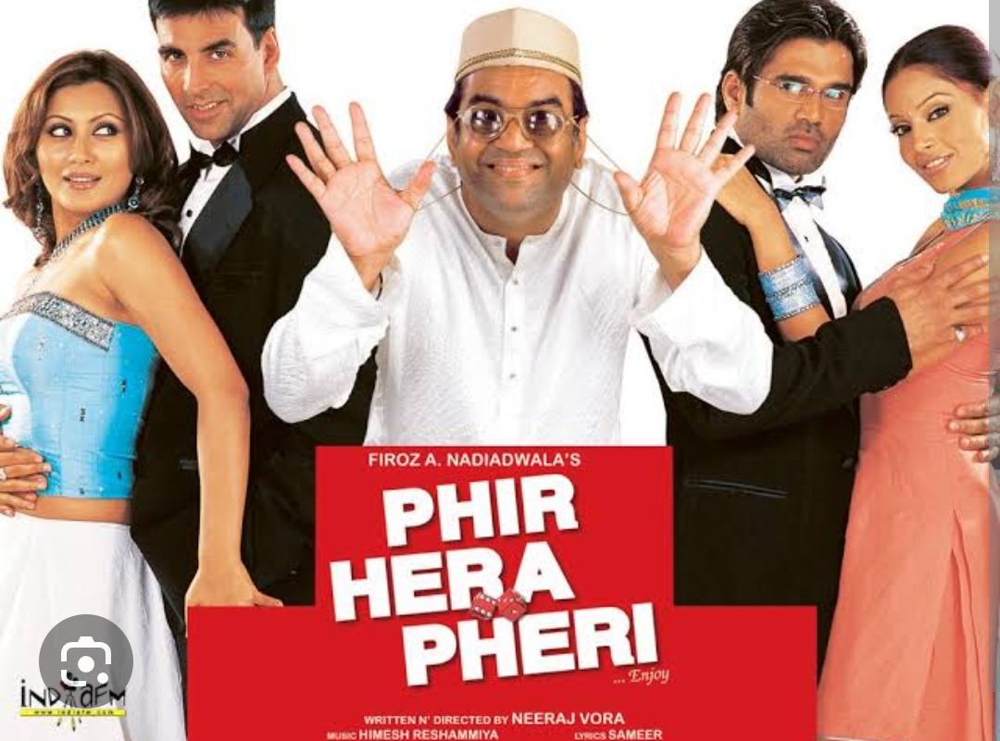

One of the classic movies of Indian Cinema. You will never get bored watching this movie.
This movie raised the status of Indian Cinema. The graphics and costumes of actors were just fabulous.

This movie highlights various burning issues of India. Also, the highlight of the movie was superstar Shahrukh Khan.